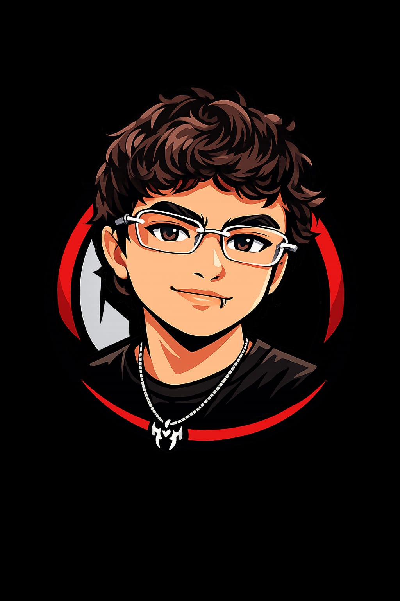

Diseño gráfico y digital
Trabajo con conceptos sólidos y estética limpia para materializar ideas en piezas visuales coherentes.
Formándome en producción multimedia y diseño digital, con enfoque en proyectos visuales de impacto.

Desarrollo soluciones visuales con énfasis en claridad, estética y crecimiento profesional.
Desarrollo conceptos visuales claros y con personalidad para proyectos en crecimiento.
Estoy formándome en Producción Multimedia, trabajando con video, audio, motion y diseño digital.
Trabajo con conceptos sólidos y estética limpia para materializar ideas en piezas visuales coherentes.
Exploro modelado y visualización básica en 3D, aplicando texturas simples y composiciones para presentaciones.

Ilustración vectorial, creación de logotipos y branding digital.

Edición de imágenes, retoque fotográfico y composiciones visuales.

Modelado 3D, visualización y pruebas de gráficos en movimiento.

Motion graphics, animación y composiciones de video.

Edición de video para cortos, presentaciones y contenidos audiovisuales.
Edición de audio y mejora de sonido para contenidos multimedia.
 Marca
Marca
Concepto visual con personalidad, pensado para una marca emergente.
Ver caso Web
Web
Interfaz con ritmo editorial y enfoque claro en el contenido.
Ver caso Motion
Motion
Secuencia visual creada para destacar un mensaje de forma dinámica.
Ver casoComienzo en diseño digital, interfaces y contenidos multimedia.
Trabajo en propuestas visuales, piezas para clase y materiales de práctica.
Desarrollo de conceptos que comunican personalidad y coherencia visual.
Páginas y layouts pensados para mostrar contenido de manera clara y moderna.
Movimiento sutil para dar vida a proyectos sin saturar la experiencia.
Busco oportunidades para seguir aprendiendo y aportar a tus contenidos multimedia.